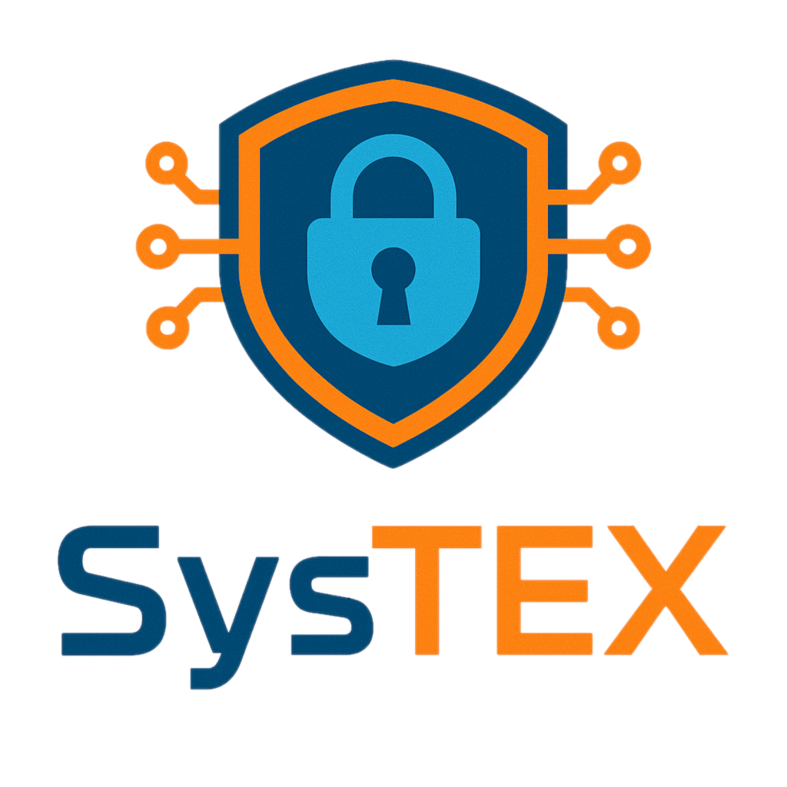

|  |
SysTEXWorkshop on System Software for Trusted Execution |
The System Software for Trusted Execution (SysTEX) will focus on research challenges related to Trusted Execution Environments (TEEs) and explore new ideas and strategies for implementing trustworthy systems with TEEs. The workshop aims to foster collaboration and discussion among researchers and practitioners in this field. In recent years all major hardware manufacturers have developed some form of TEE support, making this technology widely available in compute devices today.
SysTEX'25, Co-located with EuroS&P'25
SysTEX'24, Co-located with EuroSys'24
SysTEX'23, Co-located with EuroSys'23
SysTEX'22, Co-located with ASPLOS'22
SysTEX'19, Co-located with SOSP'19
SysTEX'18, Co-located with CCS'18
SysTEX'17, Co-located with SOSP'17
SysTEX'16, Co-located with Middleware'16